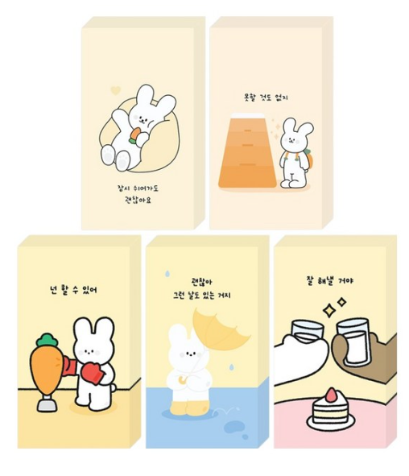
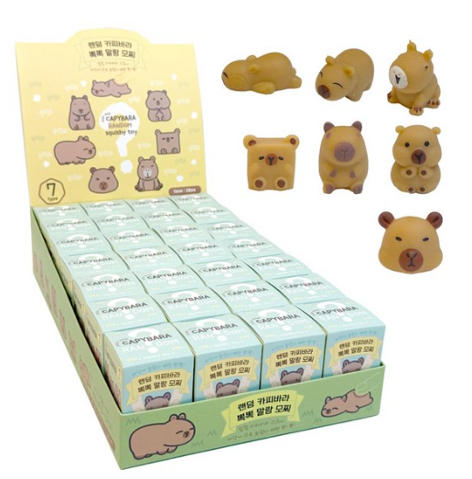
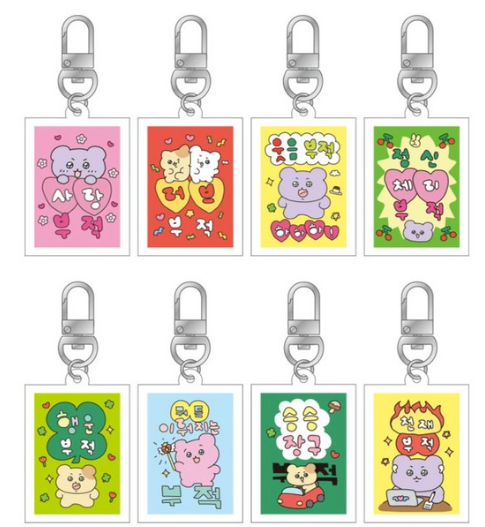
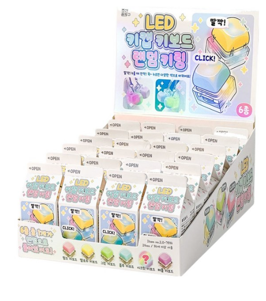

4가지 마음카드를 보여주고, 지금 가장 가까운 카드를 직접 고르게 해요.
6문항 간이검사(약 1분)로 오늘의 유형을 확인해요. 진단이 아니라 대화의 단서예요.
결과 화면의 질문을 시작점으로, 2~3분 정도 가볍게 이야기를 나눠요.
고른 카드에 맞는 아이템을 건네며 마무리해요.




결과 유형은 정답이 아니라 대화를 여는 질문이에요.
진단이 아니라 대화를 여는 도구예요. 맞다/틀리다로 판단하지 말고 "이런 면이 있을 수 있겠다" 정도로 가볍게 전달해주세요.
존댓말이지만 편하게. "~하셨나요" 보다는 "~했어요?, ~그랬죠?" 처럼 또래끼리 이야기하듯 자연스럽게 말해주세요.
질문을 던진 뒤 바로 다음 말을 잇지 말고 2~3초 기다려주세요. 대답을 안 해도 괜찮고, 그냥 다음으로 넘어가면 돼요.
조언하거나 해결하려 하지 마세요. 들어주는 것만으로 충분해요. 더 깊은 이야기가 나오면 1388 같은 전문기관 연계를 안내해주세요.
각 카드는 6개의 질문으로 구성돼 있고, 질문마다 4개의 보기(A~D)가 있어요. 참가자가 고른 보기 중 가장 많이 선택된 보기가 "오늘의 유형"으로 나와요. 예를 들어 6개 중 3개를 A, 2개를 B, 1개를 C로 골랐다면 A 유형 결과가 나오는 식이에요.
유형은 성격을 규정하는 게 아니라 "오늘, 지금 이 순간" 어디에 더 가까운지를 보여주는 거예요. 같은 사람이 다음에 다시 해도 다른 유형이 나올 수 있어요 — 이 점을 참가자에게 살짝 알려주면 "정답을 찾아야 한다"는 부담을 덜어줄 수 있어요.
스스로에게 너무 높은 기준을 들이대며 잘한 것보다 부족한 것을 먼저 보는 상태예요. 그만큼 열심히 살아왔다는 뜻이기도 해요.
자기 기준보다 남의 시선이 먼저 떠오르는 상태예요. 맞춰주려다 보면 내가 뭘 원하는지 뒤로 밀려나요.
스스로에게 너그럽고 실수해도 다시 일어설 힘을 믿는 상태예요. 이미 좋은 자기돌봄 습관을 갖고 있어요.
나에 대한 생각 자체를 잘 안 하는 상태예요. 괜찮아서가 아니라 챙길 여유나 습관이 없었을 수도 있어요.
할 일 생각이 머릿속을 떠나지 않는 상태예요. 쉬는 순간에도 다음 일이 떠올라 진짜 쉼이 어려웠을 거예요.
불편하거나 힘든 걸 표현하기보다 속으로 삭이는 편이에요. 괜찮아 보여도 쌓인 게 많을 수 있어요.
의욕이 없는 건 게을러서가 아니라, 이미 많이 쓴 에너지가 채워지지 않은 상태예요. 지금은 회복이 먼저예요.
신경이 곤두서 있어서 평소라면 넘겼을 일에도 쉽게 반응하게 돼요. 몸과 마음이 계속 경계 상태예요.
관계는 있지만 진짜 내 얘기를 나눌 사람은 없다고 느끼는 상태예요. 겉으로는 잘 지내는 것처럼 보일 수 있어요.
연락하고 만나는 관계 자체가 줄어든 상태예요. 혼자가 익숙해졌지만, 그만큼 연결이 그리운 순간도 있을 거예요.
모임이나 관계 안에 있어도 내 자리가 아닌 것 같은 느낌이 드는 상태예요. 소속감이 부족하게 느껴질 수 있어요.
지금 상황보다, 예전에 있던 어떤 사람·관계의 부재가 외로움의 중심인 상태예요. 그 관계가 남긴 자리가 클 수 있어요.
내 속도보다 남들의 속도가 기준이 되어버린 상태예요. 비교하다 보면 지금의 나는 늘 부족해 보일 수 있어요.
뭘 해야 할지 몰라서 막막한 상태예요. 방향이 없다는 건 틀렸다는 뜻이 아니라, 아직 못 찾았다는 뜻이에요.
틀릴까봐, 실패할까봐 시작 자체가 어려운 상태예요. 완벽하게 하려는 마음이 오히려 발을 묶고 있을 수 있어요.
미래 생각 자체가 버거워서 자꾸 미루거나 피하게 되는 상태예요. 지금은 몰아붙이기보다 잠깐의 쉼이 필요해요.
config.js에 실제 Supabase URL·anon key 입력 확인